第 4、5、6 题的伴侣预设怎么处理。没有伴侣就按第 8 课的方法重新框定，最好用的是这一句：
I don't have a partner at the moment, so I'll answer hypothetically — I'd want somewhere with mountains, because…
一句话就过，不要展开解释，也不要尴尬。
03课本例题：一段「有取舍」的商店选择
例题问 Where do you usually shop?。这段答案值得看的地方是：它没有停在「我去折扣店」，而是立刻说明了这个选择的好处（省时间省钱）和它的风险（容易被便宜货诱惑）。这就是「代价」那一层。
Example
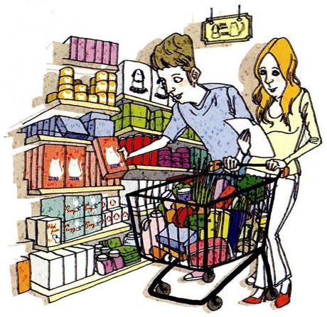
Where do you usually shop? /ʃɑːp/
What you seeA man reaching for a box on a supermarket shelf, a woman beside him holding the trolley, which is already full. Stocked shelves all the way up.
What it means你平时在哪买东西。注意 shop 在这里是动词「购物」，不是名词「商店」。
Say it like this"I usually shop at discount stores. I'm happy to pay a membership fee, because I save more over time on the reduced prices. But I have to be careful not to get tempted by the cheap prices and buy things I don't actually need. Otherwise I'm just wasting money."
这段里四个可以直接搬走的表达：pay a membership fee（付会员费）、
save more over time（长期下来省更多）、
be tempted by… into doing sth（被诱惑去做某事）、
Otherwise, it's just wasting money.（否则就是在浪费钱）。
最后一个句式 Otherwise, … 在表达「所以必须怎样，不然就……」时特别好用。
「我常去……」不要用 I usually go to the supermarket to buy things。
英语更倾向用一个动词把「去 + 买」合并：
I shop at… / I get my groceries at… / I do my shopping at…。
后者 do one's shopping 是固定搭配，非常地道。
04十五个问题：怎么答出层次
每张卡三段：What you see 照着图描述，What it means 说清这题在问什么（以及要不要给理由），Say it like this 给三档答案：① 一句短答 / ② 地点 + 理由 / ③ 再加一层代价或对比。第三档请换成你自己的真事。
01
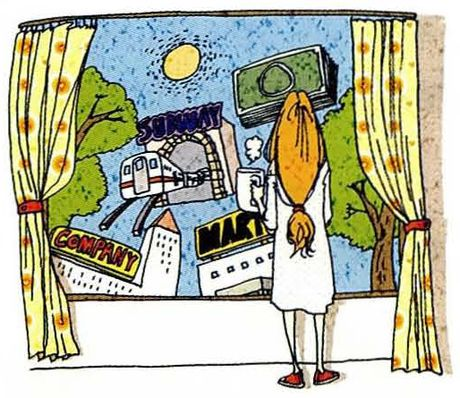
Where do you live now? Why?
What you seeA woman standing at an open window with curtains pulled back, looking out over rooftops, a river and a boat. She's checking out her neighbourhood.
What it means你现在住哪、为什么住那。注意 live 是不及物动词，后面必须跟介词。
Say it like this①In a university dormitory, near the east gate. ②I rent a small flat about ten minutes' walk from the lab. I chose it purely for the distance — I don't own a car and the buses here are unpredictable. ③I live in a rented flat on the fifth floor of an old building near campus. The reason is boringly practical: it's a ten-minute walk to the lab, which matters when I finish at midnight. The trade-off is that the building has no lift and the walls are thin, so I hear my neighbour's television. I've decided the walk is worth more than the quiet.
02
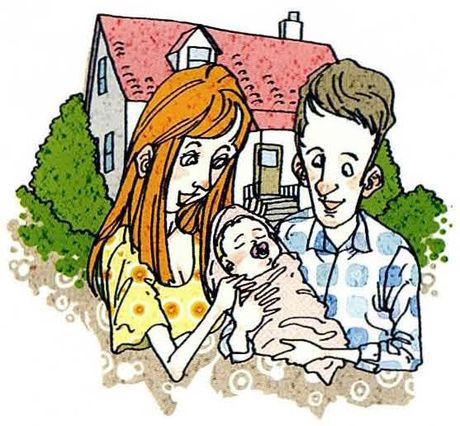
Where were you born? Describe what your hometown looks like.
What you seeA young couple holding a baby outside a house with a red roof and green bushes around it. Hometown as a picture of home.
What it means你出生在哪、描述你的家乡。第二问是描述，不是再报一个地名 —— 要说大小、地形、特点。
Say it like this①I was born in a small town in Shandong. ②A medium-sized city in the north — flat, dry, and famous for its noodles. There's one river through the middle and everything else is new buildings. ③I was born in a coal town that's been shrinking since I was a child. It's flat, dusty in spring, and there's a big old mine on the edge of town that closed years ago. What I remember most is that everyone knew everyone — you couldn't get away with anything, which I hated at fifteen and miss now.
03
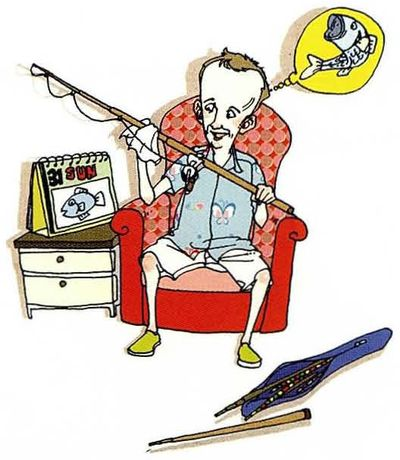
Where do you usually go on Sundays?
What you seeA man sitting back in a red armchair holding a long rod with a yellow bird perched on the end, an old television beside him. His Sunday spot.
What it means星期天通常去哪。注意 on Sundays（每逢周日）用 on，不表示地点。
Say it like this①Nowhere, mostly — Sunday is my day of doing nothing. ②I usually go to the lab for a few hours, then to the market near campus to buy food for the week. ③Honestly, the lab — but only for the morning, and it's a different kind of work. Nobody emails on Sunday, so it's the only time I can read something long without being interrupted. In the afternoon I go to a small park about twenty minutes away and walk around it three or four times. That's the whole routine and I've kept it for two years.
04
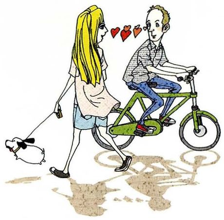
Where did you meet your current sweetheart for the first time?
What you seeA woman walking a small dog, and a man riding a green bicycle beside her. A chance meeting on a street.
What it means你和现在的对象第一次见面在哪。sweetheart 是比较老派的说法，日常更常说 partner 或 girlfriend / boyfriend。
Say it like this①I don't have a partner at the moment, so I can't answer that one. ②No partner right now — but the last one I met at a friend's birthday dinner, which is apparently the only way anyone meets anyone anymore. ③I'm single, so I'll answer for a friend instead, because her story is better than mine would be. She met her husband in a hospital waiting room — both of them were there for someone else. She says the first thing he said to her was that the coffee machine was broken, and she married him anyway.
05
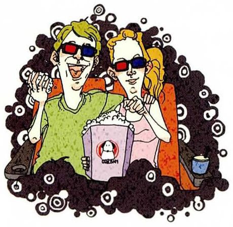
Where do you usually meet your sweetheart?
What you seeTwo friends sitting close together, both in sunglasses, one holding a small bag. There are hearts and bubbles around them.
What it means你通常在哪和对象见面。同样预设有伴侣，同一套处理方法。
Say it like this①No sweetheart, unfortunately. ②Not applicable right now — but in my last relationship we mostly met at a café halfway between our two campuses, which is a very unromantic answer to a romantic question. ③I'm single, so I'll reframe it: the place I'd meet someone now would almost have to be somewhere I already go. My life is the lab, the canteen and one café near the north gate. So realistically, if it happens, it happens in one of those three — which I find slightly depressing and also completely normal at my age.
06
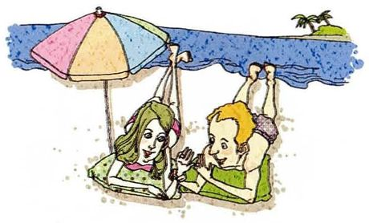
Where do you want to go on your honeymoon? Why?
What you seeA couple lying on towels under a big striped umbrella, right at the edge of blue water, a palm tree to one side. Somewhere warm.
What it means蜜月想去哪、为什么。honeymoon 专指婚后旅行，不能泛指任何假期。
Say it like this①Honestly, I've never thought about it — that's a long way off for me. ②Hypothetically? Somewhere with mountains rather than a beach. A beach sounds like a competition to do nothing, and I'd get bored by the second day. ③I'd want to go somewhere I'd otherwise never go, because a honeymoon is one of the few times in life you can justify the expense. So not a resort — I'd rather spend the same money on two weeks somewhere completely unfamiliar, where I don't speak the language. Though I say that now, with no plans and no partner, so it's cheap talk.
07
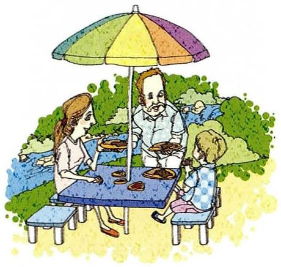
Where did you go on your last vacation? What did you do?
What you seeA family at a blue picnic table under a big rainbow umbrella, water and trees behind them. A quiet afternoon out.
What it means上次假期去了哪、做了什么。注意 on vacation（度假中）和 on your last vacation 都用 on。
Say it like this①I went home, actually. That was the vacation. ②I went back to my parents' place for a week. I did almost nothing — ate, slept, and watched television with my mother, which was exactly what I needed. ③My last real vacation was three days in Chengdu, and it was mostly about food. We did the tourist things in the morning and then spent the entire afternoon sitting in a teahouse doing nothing. I came back more rested than from any trip where I tried to see everything — which I've since decided is the correct way to travel.
08
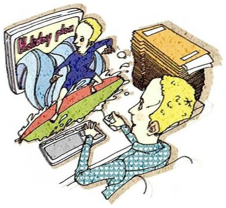
Where are you planning to go for your next summer vacation? Why?
What you seeA man lying on his bed reading a travel brochure with Hawaii on the cover, a laptop and a stack of books beside him. Planning a trip from bed.
What it means下个暑假打算去哪、为什么。注意 plan to do / be planning to do。
Say it like this①Nowhere, probably — summer is my busiest season. ②I'm planning to go somewhere close, maybe a week in Yunnan. I want to travel without spending three days of it on trains. ③I'd like to go to Xinjiang, and the reason is partly that everyone tells me I should and I've never been. But there's a practical reason too: it's the one trip I could take without leaving the country, so no visa and no flight budget. My supervisor has already said August is fine, which in his language means he'll forget and ask where I am.
09
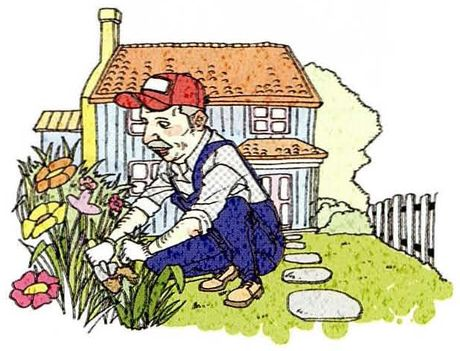
Where do you want to live after you retire? Why?
What you seeAn older man in a cap and overalls kneeling in a garden, watering flowers, with a small white house and a picket fence behind him. A quiet retirement.
What it means退休后想住哪、为什么。注意 after you retire —— retire 是不及物动词，不加宾语。
Say it like this①Somewhere quieter than here, that's all I know. ②Probably a smaller city near where I grew up. Cheaper, slower, and I'd rather be the person who moved away and came back than the one who never left. ③This is going to sound strange for someone my age, but I think about it. I'd want a small place within walking distance of a market and a hospital, because those are the two things that matter when you're old. Not the countryside — I've watched my grandparents get isolated out there, and it's fine until somebody needs a doctor at two in the morning.
10
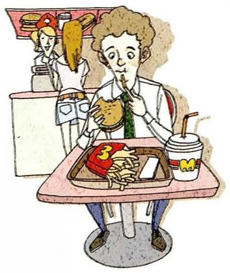
Where do you usually go when you are hungry? Why?
What you seeA man sitting at a small table in a fast food place, burger in one hand and a drink in the other, fries in front of him. Eating in a hurry.
What it means饿了通常去哪吃、为什么。注意 be hungry，不用 have hunger。
Say it like this①The canteen, because it's twenty metres away. ②Wherever is closest, honestly. When I'm actually hungry I stop being fussy — the canteen downstairs wins over anything better that's ten minutes away. ③There's a noodle place two streets over that I go to more than I'd admit. The reason isn't the food, which is fine but not special — it's that the owner knows my order and doesn't talk to me. After a day of being asked questions, that's worth more than a better meal somewhere louder.
11
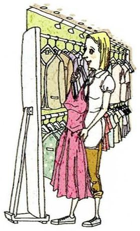
Where do you usually buy your clothes? Why?
What you seeA woman standing at a clothing rail in a shop, holding up a pink dress to look at it, rows of clothes behind her.
What it means你通常在哪买衣服、为什么。注意 buy clothes，clothes 永远是复数。
Say it like this①Online, almost always. ②Online, mostly because I hate shopping in person. I know my sizes, so the risk is low and I can send things back. ③Online, and I've stopped feeling bad about it. What changed was realising that the two hours I used to spend in a mall were two hours I could spend doing something I actually wanted to do. The trade-off is that I have no idea what things look like until they arrive, so about a fifth of what I buy goes straight back.
12
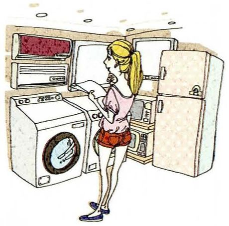
Where do you usually buy computers or other home appliances?
What you seeA woman standing in an appliance shop, looking at a stacked washing machine and an open white refrigerator. Big purchases.
What it means你通常在哪买电脑或家电。appliance 指洗衣机、冰箱这类大件家电。
Say it like this①Online, and I check the reviews far too carefully. ②For anything expensive I buy from the official store rather than a marketplace seller, even if it costs a bit more. I'd rather pay for not having to argue about a warranty. ③Online, but with a rule: anything over a thousand yuan I go and look at in a shop first. I've made the mistake of buying a laptop from a photograph twice, and both times the keyboard was the thing that ruined it. So now I spend an hour in a shop annoying the staff, then order it online anyway.
13
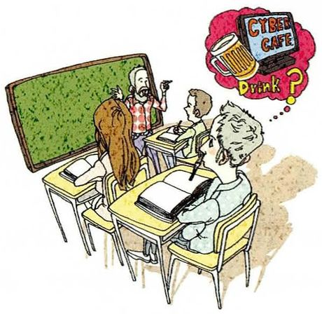
Where are you going after this class?
What you seeA classroom with a teacher at a green blackboard and students at small desks, and a thought bubble over one student showing coffee. Somebody's planning the next hour.
What it means下课后你去哪。这是最轻松的一题，也是最容易被答成一句话就没了的一题。
Say it like this①Back to the lab, probably. ②Straight back to the lab — I've got an experiment running that needs checking in about an hour. Then home, and I'll probably cook something. ③To the coffee place on the corner first, because there's a difference between being awake and being able to think. Then the lab until seven or so. It's not an exciting answer, but I've learned that if I go home first, I don't come back out.
14
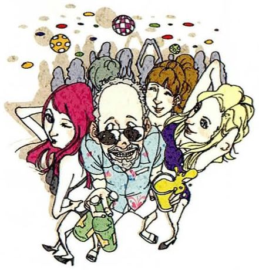
Where do you most want to visit?
What you seeA crowd of people in a jumble of different traditional costumes — hats, headscarves, patterns from all over the world. The whole world in one picture.
What it means你最想去哪。注意 most want to 的位置 —— 它不是最高级，只是加强语气。
Say it like this①Iceland, if I could pick one. ②Iceland. It's the least like anywhere I've been — no cities to speak of, and the landscape does all the work. ③Iceland, and the honest reason is that it's the opposite of my hometown. I grew up somewhere flat, dusty and crowded with people who'd known me since I was born. I want to stand somewhere with nobody around for an hour, where nothing is trying to remind me of anything. Whether that's a holiday or just a mood, I'm not sure.
15
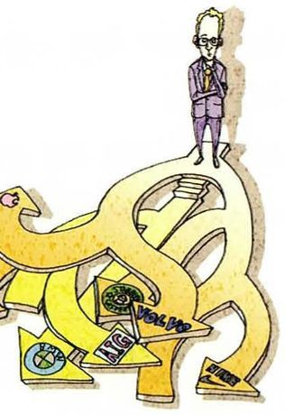
Where do you hope to work?
What you seeA tiny man in a suit standing on top of an enormous golden dollar sign, with company logos scattered around the base. Career ambition, drawn literally.
What it means你希望在哪工作。注意 hope to do 后面接动词原形，不加 that 从句时最自然。
Say it like this①Somewhere I can keep doing research. ②I'd like to stay in a university lab, ideally somewhere I could continue this project. I'm less attached to the city than to the work. ③I hope to work somewhere the problem is the same one I'm on now — a university, a research institute, or a company lab, I don't much mind which. What I've learned in the last two years is that the building matters less than whether anyone there is thinking about the same question. I'd rather be a small part of one good group than a big part of a well-funded one doing something else.
05重点词汇（美式音标）
课首页脚注给了 8 个词，全部出自例题那段「折扣店购物」的答案。这些词在讲消费、讲取舍时非常常用。
A · 课本脚注的 8 个词
词
音标
课上怎么用
中文
fee
/fiː/
pay a membership fee / an entrance fee 服务费、会费。学费是 tuition，别混
费用
due to
/duː tuː/
save money due to the reduced prices 因为、由于。比 because of 稍正式
由于
tempt
/tempt/
be tempted by cheap prices into buying sth 诱惑。核心搭配 be tempted to do
诱惑
immediate
/ɪˈmiːdiət/
an immediate need / for immediate use 即时的、当下的
即时的
otherwise
/ˈʌðərwaɪz/
Otherwise, it's just wasting money. 否则。放在句首最好用
否则
sweetheart
/ˈswiːthɑːrt/
my sweetheart 老派说法。日常说 partner / girlfriend / boyfriend
爱人
honeymoon
/ˈhʌnimuːn/
go on your honeymoon 专指婚后旅行
蜜月
appliance
/əˈplaɪəns/
home appliances / household appliances 大家电。小家电常直接用 gadget
家电
B · 描述地点的词
词
音标
课上怎么用
中文
suburb
/ˈsʌbɜːrb/
in the suburbs / a quiet suburb 郊区。注意常复数
郊区
downtown
/ˈdaʊntaʊn/
right in the centre of downtown 市中心（美式）
市中心
countryside
/ˈkʌntrisaɪd/
live in the countryside 农村。要说 the countryside
乡村
neighbourhood
/ˈneɪbərhʊd/
a quiet neighbourhood 街区、社区。比 area 更有人情味
街区
within walking distance
/wɪˈðɪn ˈwɔːkɪŋ ˈdɪstəns/
It's within walking distance of the campus. 步行可达。非常实用
步行可达
commute
/kəˈmjuːt/
I commute forty minutes each way. 通勤。也可以作名词 a long commute
通勤
flat / apartment
/flæt/, /əˈpɑːrtmənt/
rent a flat / an apartment 英式 flat，美式 apartment
公寓
rent
/rent/
The rent is painful. / rent a place 名词和动词同形
租金 / 租
C · 做出选择时的表达
表达
音标
用法
中文
trade-off
/ˈtreɪd ɔːf/
The trade-off is that… 权衡、代价。本课核心词
权衡
I'd rather… than…
/aɪd ˈræðər/
I'd rather pay it than commute two hours. 宁可……也不……
How is the city you live in now different from your hometown?
Scale, mainly. My hometown has about two hundred thousand people and one main road; this city has eight million and I still don't know the names of half the districts. The other difference is anonymity, and I mean that as a good thing — nobody here knows what my father does or how I did in school. At home that's all anyone ever knew.
先给一个可量化的差异（人口、路），再给一个抽象的差异（匿名感）。后者是让回答有深度的关键，而且它用了一个很地道的说法：I mean that as a good thing。
Would you rather live in a city or the countryside? Why?
A city, and it's not really a preference — it's a calculation. I need a hospital, a market and a library within reach, and in the countryside I'd have one of the three. But I'd want the city to be a small one. I've lived in this one long enough to know that scale stops being exciting at about the point where the commute passes forty minutes.
It's not really a preference — it's a calculation 是很高级的开场，一下子把「喜好题」变成「条件题」。而且最后那句精确的时间（forty minutes）让观点有依据。
Is there anywhere you would never want to live?
Anywhere I'd need a car for basic things. I've never owned one, and I don't want my daily life to depend on a machine I have to park. That rules out a lot of suburbs and most of America, which I realise is a fairly strong position to hold based on one preference.
最后一句自我提醒（which I realise is a fairly strong position）显得你很清醒，不是随口下判断。这种自我限定在观点题里非常加分。
What's the best place you've ever been to?
A small town in the south where I went for a conference and stayed two extra days. Nothing happened there — that was the point. I'd been somewhere crowded and loud for weeks, and I remember standing in the square at nine in the evening with nobody around, and thinking I could hear the river. I've since wondered whether the place was that good or I was just that tired.
Thirty-five, so probably somewhere with a job I've held for a few years by then. I'd like it to be research, but I've stopped describing the future in job titles. What I'd actually like is to still be curious about the same question, and to have somewhere quiet to work on it. That's less a location than a condition.
If you could live anywhere in the world for a year, where would it be?
Somewhere in northern Europe, probably Germany or the Netherlands. Not for the scenery — for the working culture. I'd like to see what it's like to be in a place where leaving at six isn't considered a lack of commitment. One year seems like the right length: long enough to find out, short enough to come back.
给出具体的国家而不是「欧洲」，给出理由而不是「风景好」，最后用 long enough to… short enough to… 的对称结构收尾。这三个动作合起来就是一段高质量的回答。
07这节课最容易犯的错
这一课的错误几乎全是介词，而且都是同一个根源：中文一个「在」对应英语三个词。
✗I go to home after class. ✓I go home after class.
home 前面不加 to。同理 go abroad、go downtown 也不加。这是第 13 题最可能踩的坑。
✗I live in Beijing city. ✓I live in Beijing. / I live in the city of Beijing.
城市名后面不加 city。想强调「市区」就说 in downtown Beijing。
✗I usually go to somewhere on Sundays. ✓I usually go somewhere on Sundays.
somewhere / anywhere / nowhere 是副词，前面不加 to。但 somewhere 后面可以接介词短语：somewhere near the campus。
✗In Sunday I go to the market. ✓On Sundays I go to the market.
星期几用 on。这一课第 3 题原文就是 on Sundays，照抄课本就不会错。
✗I live in the five floor. ✓I live on the fifth floor.
楼层用 on，而且要用序数词 fifth。这是最典型的两个错误叠在一起。
✗My hometown is very small, there have a river and many mountains. ✓My hometown is small — there's a river and there are mountains around it.
「有」不能说 there have，要用 there is / there are。而且两个句子之间不能只用逗号连接。
✗I want to go to Iceland because it is very beautiful scenery. ✓I want to go to Iceland because the scenery is incredible.
scenery 是不可数名词，不能直接接 very beautiful 当表语用；改成 the scenery is incredible 就自然了。
✗Where do you usually go when you are hungry? — I go to eat. ✓The canteen, because it's twenty metres away.
被问 Where，就必须给地点。「去吃饭」没有回答「在哪」。这类答非所问比语法错误更影响观感。
08五十分钟怎么用
这一课的词汇不难，难在「地点 + 理由」的第二段。准备重点应放在理由上。
课前 10 分钟：只看第 02 节 A 表四组介词in / on / at / to 的分工过一遍，再记三个例外（go home / go abroad / arrive in）。这一课的语法风险基本就覆盖了。